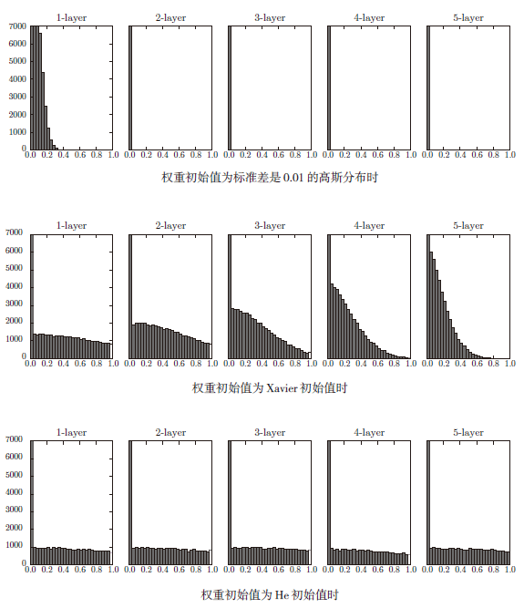

正文
6.1 参数的更新
6.1.2 SGD
W←W−η∂W∂L
1
2
3
4
5
6
7
| class SGD:
def __init__(self, lr=0.01):
self.lr = lr
def update(self, params, grads):
for key in params.keys():
params[key] -= self.lr * grads[key]
|
6.1.3 SGD 的缺点

如果函数的形状非均向（anisotropic），比如呈延伸状，搜索的路径就会非常低效。因此，我们需要比单纯朝梯度方向前进的 SGD 更聪明的方法。SGD 低效的根本原因是，梯度的方向并没有指向最小值的方向(指向极小值的方向)。
6.1.4 Momentum
v←αv−η∂W∂L
W←W+v
1
2
3
4
5
6
7
8
9
10
11
12
13
14
15
16
| class Momentum:
def __init__(self, lr=0.01, momentum=0.9):
self.lr = lr
self.momentum = momentum
self.v = None
def update(self, params, grads):
if self.v is None:
self.v = {}
for key, val in params.items():
self.v[key] = np.zeros_like(val)
for key in params.keys():
self.v[key] = self.momentum * self.v[key] - self.lr * grads[key]
params[key] += self.v[key]
|
6.1.5 AdaGrad
在神经网络的学习中，学习率（数学式中记为 η）的值很重要。
-
学习率过小，会导致学习花费过多时间；
-
学习率过大，则会导致学习发散而不能正确进行。
在关于学习率的有效技巧中，有一种被称为**学习率衰减（learning rate decay）**的方法，即随着学习的进行，使学习率逐渐减小。实际上，一开始“多”学，然后逐渐“少”学的方法，在神经网络的学习中经常被使用。
h←h+∂W∂L⊙∂W∂L
W←W−η√h1∂W∂L
和前面的 SGD 一样，W 表示要更新的权重参数，∂W∂L表示损失函数关于 W 的梯度，η 表示学习率。这里新出现了变量 h，保存了以前的所有梯度值的平方和（⊙ 表示对应矩阵元素的乘法）。然后，在更新参数时，通过乘以 √h1，就可以调整学习的尺度。
AdaGrad 会记录过去所有梯度的平方和。因此，学习越深入，更新的幅度就越小。实际上，如果无止境地学习，更新量就会变为 0，完全不再更新。为了改善这个问题，可以使用 RMSProp 方法。RMSProp 方法并不是将过去所有的梯度一视同仁地相加，而是逐渐地遗忘过去的梯度，在做加法运算时将新梯度的信息更多地反映出来。这种操作从专业上讲，称为“指数移动平均”，呈指数函数式地减小过去的梯度的尺度。
1
2
3
4
5
6
7
8
9
10
11
12
13
14
15
| class AdaGrad:
def __init__(self, lr=0.01):
self.lr = lr
self.h = None
def update(self, params, grads):
if self.h is None:
self.h = {}
for key, val in params.items():
self.h[key] = np.zeros_like(val)
for key in params.keys():
self.h[key] += grads[key] * grads[key]
params[key] -= self.lr * grads[key] / (np.sqrt(self.h[key]) + 1e-7)
|
6.1.6 Adam
Adam 是 2015 年提出的新方法。它的理论有些复杂，直观地讲，就是融合了 Momentum 和 AdaGrad 的方法。通过组合前面两个方法的优点，有望实现参数空间的高效搜索。此外，进行超参数的“偏置校正”也是 Adam 的特征。
Adam 会设置 3 个超参数。一个是学习率（论文中以 α 出现），另外两个是一次 momentum 系数 β1 和二次 momentum 系数 β2。根据论文，标准的设定值是 β1 为 0.9，β2 为 0.999。设置了这些值后，大多数情况下都能顺利运行。
1
2
3
4
5
6
7
8
9
10
11
12
13
14
15
16
17
18
19
20
21
22
23
| class Adam:
"""Adam (http://arxiv.org/abs/1412.6980v8)"""
def __init__(self, lr=0.001, beta1=0.9, beta2=0.999):
self.lr = lr
self.beta1 = beta1
self.beta2 = beta2
self.iter = 0
self.m = None
self.v = None
def update(self, params, grads):
if self.m is None:
self.m, self.v = {}, {}
for key, val in params.items():
self.m[key] = np.zeros_like(val)
self.v[key] = np.zeros_like(val)
self.iter += 1
lr_t = self.lr * np.sqrt(1.0 - self.beta2**self.iter) / (1.0 - self.beta1**self.iter)
for key in params.keys():
self.m[key] += (1 - self.beta1) * (grads[key] - self.m[key])
self.v[key] += (1 - self.beta2) * (grads[key]**2 - self.v[key])
params[key] -= lr_t * self.m[key] / (np.sqrt(self.v[key]) + 1e-7)
|
很多研究中至今仍在使用 SGD。Momentum 和 AdaGrad 也是值得一试的方法。最近，很多研究人员和技术人员都喜欢用 Adam。
6.2 权重的初始值
6.2.1 可以将权重初始值设为 0 吗
不行。为了防止“权重均一化”（严格地讲，是为了瓦解权重的对称结构），必须随机生成初始值。
6.2.2 隐藏层的激活值的分布
随着输出不断地靠近 0（或者靠近 1），它的导数的值逐渐接近 0。因此，偏向 0 和 1 的数据分布会造成反向传播中梯度的值不断变小，最后消失。这个问题称为梯度消失（gradient vanishing）。层次加深的深度学习中，梯度消失的问题可能会更加严重。
现在，在一般的深度学习框架中，Xavier 初始值已被作为标准使用。比如，Caffe 框架中，通过在设定权重初始值时赋予 xavier 参数，就可以使用 Xavier 初始值。
Xavier 初始值：与前一层有 n 个节点连接时，初始值使用标准差为 √n1 的分布。
1
2
| node_num = 100
w = np.random.randn(node_num, node_num) / np.sqrt(node_num)
|

6.2.3 ReLU 的权重初始值
Xavier 初始值是以激活函数是线性函数为前提而推导出来的。因为 sigmoid 函数和 tanh 函数左右对称，且中央附近可以视作线性函数，所以适合使用 Xavier 初始值。但当激活函数使用 ReLU 时，一般推荐使用 ReLU 专用的初始值，也就是 Kaiming He 等人推荐的初始值，也称为“He 初始值”。
当前一层的节点数为 n 时，He 初始值使用标准差为 √n2 的高斯分布。当 Xavier 初始值是 n1 时，（直观上）可以解释为，因为 ReLU 的负值区域的值为 0，为了使它更有广度，所以需要 2 倍的系数。
6.3 Batch Normalization
Batch Normalization 的优点：
-
可以使学习快速进行（可以增大学习率）。
-
不那么依赖初始值（对于初始值不用那么神经质）。
-
抑制过拟合（降低 Dropout 等的必要性）。
6.3.1 Batch Normalization 的算法
Batch Norm，顾名思义，以进行学习时的 mini-batch 为单位，按 minibatch 进行正规化。具体而言，就是进行使数据分布的均值为 0、方差为 1 的正规化。
对于 mini-batch 的 m 个输入数据的集合 B：
μB←m1∑i=1mxi，求均值
σB2←m1∑i=1m(xi−μB)2，求方差
x^i←√σB2+εxi−μB，ε 是一个微小值，如 10−7 等，防止出现除以 0 的情况。
将 mini-batch 的输入数据 {x1,x2,...,xm} 变换为均值为 0，方差为 1 的数据 {x^1,x^2,...,x^m}，接着，Batch Norm 层会对正规化后的数据进行缩放和平移的变换：
yi←γx^i+β
这里，γ 和 β 是参数。一开始 γ=1,β=0，然后再通过学习调整到合适的值。
6.4 正则化
6.4.1 过拟合
6.4.2 权值衰减
权值衰减是一直以来经常被使用的一种抑制过拟合的方法。该方法通过在学习的过程中对大的权重进行惩罚，来抑制过拟合。
损失函数加上权重的平方范数（L2 范数）。这样一来，就可以抑制权重变大。
L2 范数相当于各个元素的平方和。用数学式表示的话，假设有权重 W=(w1,w2,...,wn)，则 L2 范数可用 √w12+w22+...+wn2 计算出来。除了 L2 范数，还有 L1 范数、L ∞范数等。L1 范数是各个元素的绝对值之和，相当于 ∣w1∣+∣w2∣+...+∣wn∣。L∞范数也称为 Max 范数，相当于各个元素的绝对值中最大的那一个。L2 范数、L1 范数、L∞范数都可以用作正则化项，它们各有各的特点，不过这里我们要实现的是比较常用的 L2 范数。
6.4.3 Dropout
Dropout 是一种在学习的过程中随机删除神经元的方法。训练时，随机选出隐藏层的神经元，然后将其删除。
1
2
3
4
5
6
7
8
9
10
11
12
13
14
15
16
| class Dropout:
def __init__(self, dropout_ratio=0.5):
self.dropout_ratio = dropout_ratio
self.mask = None
def forward(self, x, train_flg=True):
if train_flg:
self.mask = np.random.rand(*x.shape) > self.dropout_ratio
return x * self.mask
else:
return x * (1.0 - self.dropout_ratio)
def backward(self, dout):
return dout * self.mask
|
6.5 超参数的验证
超参数（hyper-parameter）也经常出现。这里所说的超参数是指，比如各层的神经元数量、batch 大小、参数更新时的学习率或权值衰减等。如果这些超参数没有设置合适的值，模型的性能就会很差。
6.5.1 验证数据
如果使用测试数据调整超参数，超参数的值会对测试数据发生过拟合。换句话说，用测试数据确认超参数的值的“好坏”，就会导致超参数的值被调整为只拟合测试数据。
调整超参数时，必须使用超参数专用的确认数据。用于调整超参数的数据，一般称为验证数据（validation data）。
如果是 MNIST 数据集，获得验证数据的最简单的方法就是从训练数据中事先分割 20%作为验证数据：
1
2
3
4
5
6
7
8
9
10
| (x_train, t_train), (x_test, t_test) = load_mnist()
x_train, t_train = shuffle_dataset(x_train, t_train)
validation_rate = 0.20
validation_num = int(x_train.shape[0] * validation_rate)
x_val = x_train[:validation_num]
t_val = t_train[:validation_num]
x_train = x_train[validation_num:]
t_train = t_train[validation_num:]
|
6.5.2 超参数的最优化
步骤 0 设定超参数的范围。
步骤 1 从设定的超参数范围中随机采样。
步骤 2 使用步骤 1 中采样到的超参数的值进行学习，通过验证数据评估识别精度（但是要将 epoch 设置得很小）。
步骤 3 重复步骤 1 和步骤 2（100 次等），根据它们的识别精度的结果，缩小超参数的范围
6.6 小结
-
参数的更新方法，除了 SGD 之外，还有 Momentum、AdaGrad、Adam 等方法。
-
权重初始值的赋值方法对进行正确的学习非常重要。
-
作为权重初始值，Xavier 初始值、He 初始值等比较有效。
-
通过使用 Batch Normalization，可以加速学习，并且对初始值变得健壮。
-
抑制过拟合的正则化技术有权值衰减、Dropout 等。
-
逐渐缩小“好值”存在的范围是搜索超参数的一个有效方法。